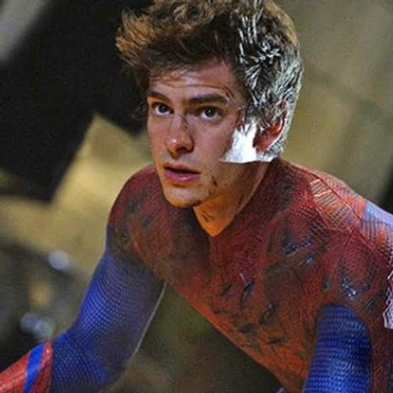

Profile
Name: Andrew Russell Garfield.
Date of Birth: August 20, 1983.
Age: 43 years old.
Birthplace: Los Angeles, California, U.S.
Profession: Actor
Major Film Roles:
Peter Parker / Spider-Man: Starred in Marc Webb's The Amazing Spider-Man duology (2012–2014) and reprised the character in Spider-Man: No Way Home (2021).
Eduardo Saverin: Facebook co-founder in the biographical drama The Social Network (2010).
Desmond Doss: A World War II conscientious objector combat medic in the biographical drama Hacksaw Ridge (2016).
Jonathan Larson: Theater composer in the musical drama tick, tick... BOOM! (2021).
Father Sebastião Rodrigues: A 17th-century Jesuit priest searching for his mentor in Martin Scorsese's Silence (2016).